Task. Given one simulated EQ-SANS measurement — a 2D detector image and its radially-averaged I(q) curve — jointly regress seven targets: the guide's misalignment offset (gx_mm, gy_mm), and the sample's cylinder geometry (radius, length, pd_radius, pd_length) and scattering contrast (contrast).
Every instance is simulated twice — once with the sample present, once without — at the same instrument state, so the model sees both a calibration reference and the scattering measurement it modifies.
eqsans_1.instr was audited first and found to produce zero detector counts. Its guide entrance was placed AT (0,0,L1), where L1=14 m is the moderator–sample distance — not the guide-entrance distance. That put the guide 13 m past the first chopper it needed to feed, in beam-tracing order, so neutrons had to travel backwards to reach it.
guide_start = 1.13 m, matched to where chopper1 actually sits (5.7 m) → full beam reaches the sample and detectorThe fixed instrument (eqsans_1_fixed.instr, later eqsans_cylinder.instr) uses an SNS_source emitting Emin=1.28 meV to Emax=20.45 meV — a 2–8 Å band — through three disk choppers before the sample.
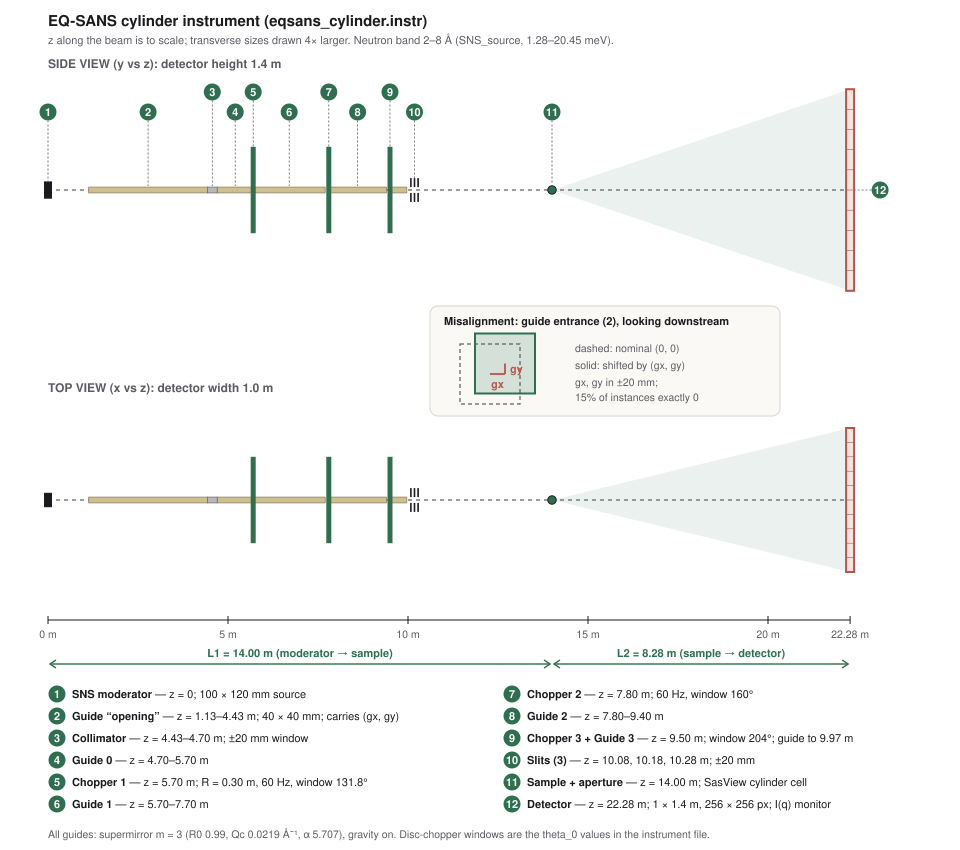
eqsans_cylinder.instr), drawn by make_schematic.py from the instrument file: distances and detector size are read from its DECLARE block, component sizes from its TRACE section. Length along the beam is to scale; transverse sizes are drawn 4× larger. The inset shows what gx/gy mean: the first guide's entrance is displaced from the nominal axis, and everything downstream is unchanged.| Target | Role | Range | Identifiability note |
|---|---|---|---|
gx_mm, gy_mm | Instrument | ±20 mm (15% exactly aligned) | Breaks radial symmetry — needs the 2D image |
radius | Sample | 20–200 Å (log) | Sets form-factor oscillation period |
length | Sample | 200–1000 Å (log) | Weaker signal than radius |
pd_radius, pd_length | Sample | 0–0.30 (linear) | Competes with the instrument's own finite collimation/wavelength smearing |
contrast | Sample | |sld−sldsolv| | Sign is not observable — see §9 |
| Polystyrene | Silica | Gold | d-Polystyrene | Nickel |
|---|---|---|---|---|
| 1.41 | 3.47 | 4.50 | 6.20 | 9.40 |
One of the five materials is drawn per instance; sld_solvent is swept continuously over −0.56…6.34 (pure H₂O → pure D₂O), so contrast varies smoothly rather than taking only five discrete values. model_scale is held fixed at 1.0 — it is a Monte Carlo normalization constant, not a physical parameter, so it carries no signal to regress.
The four continuous sample parameters (radius, length, pd_radius, pd_length) and sld_solvent are drawn from a single 5-dimensional Latin Hypercube (scipy.stats.qmc.LatinHypercube) per campaign, giving even coverage of the joint parameter space instead of the clustering plain random sampling would leave at this sample size. radius/length are mapped log-uniform (they span nearly a decade); the rest are linear-uniform.
Misalignment is sampled separately: 15% of instances are forced to gx=gy=0 as an exactly-aligned reference class, and the remaining 85% get an independent 2D LHS draw over ±20 mm — so the model always has some perfectly-aligned examples to calibrate against.
ncount=2e6 eachncountThe full campaign is one SLURM job (submit_full.sh, generated by make_run_script.py): --cpus-per-task=112, all 10,000 run commands emitted as &-backgrounded batches of 112 with a wait between batches (90 batches total), inside a 3-hour --time budget. At the measured 4.5 s/run, 90 sequential batches is an estimated ~7 minutes of simulation engine time — against ~12.5 CPU-hours if the same 10,000 runs went one at a time, which an earlier version of this script did by accident (see finding #10 in the project history) before batching was added.
detector.dat, qdet.dat, and companion monitor files) for all 10,000 runs is committed to the shared mccode-dev/PaNRAID-results repository, not just the derived manifest — so the dataset can be regenerated or re-analyzed without re-running the simulation.Everything below is real McStas output from eqsans_cylinder.instr at the campaign's ncount=2e6, produced by plot_examples.py. The Juliet raw data is not on this machine, so the controlled cases and the gallery are re-simulated locally — gallery instances use their exact campaign manifest parameters but a fresh Monte Carlo seed, so their noise realization differs from the stored campaign runs.
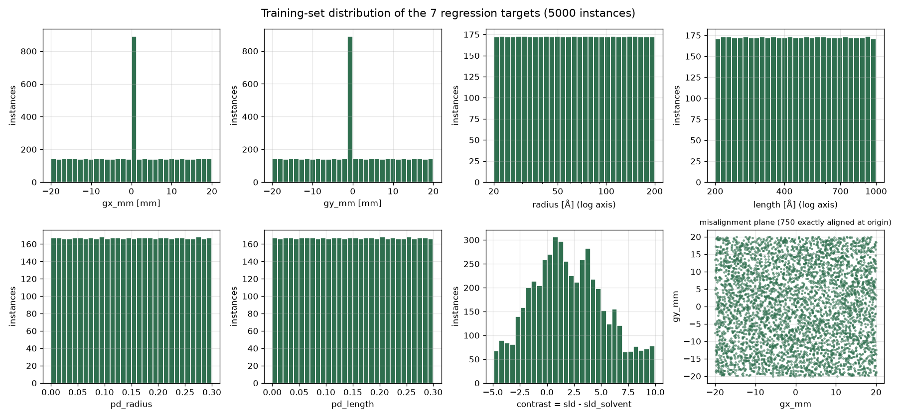
radius, length, pd_* are flat by construction; misalignment has a spike of 750 exactly-aligned instances (15%) on top of a flat ±20 mm plane; contrast is the one non-flat target, spanning −5 to +10 and concentrated between about −3 and +6, because it is the difference of a five-valued material SLD and a uniformly drawn solvent SLD.Each panel starts from one baseline (radius 60 Å, length 500 Å, contrast +2.5, aligned) and changes a single parameter, with a fixed random seed so differences are physics rather than noise.
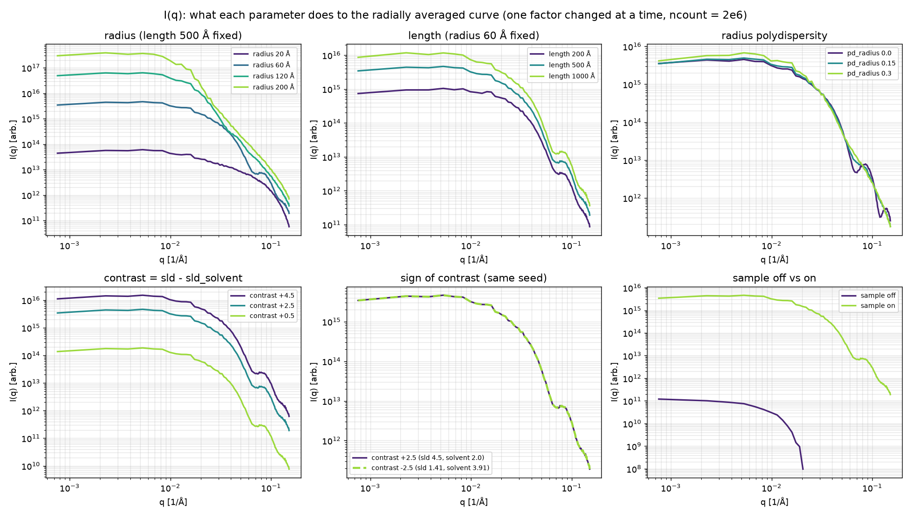
pd_radius/pd_length are so hard to learn.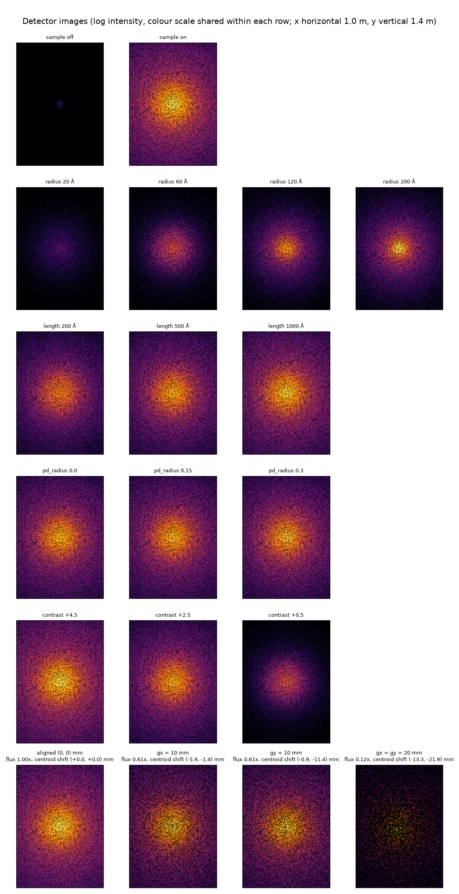
gx_mm/gy_mm.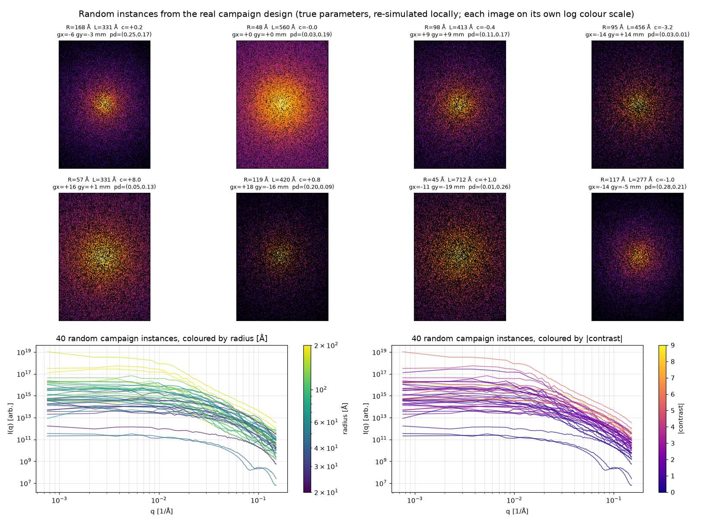
contrast and radius are entangled in a single curve.Two independent regressors are trained to the same 7 targets from two different views of each instance:
AdaptiveAvgPool2d(4,4), Linear(1024,64)→ReLU→Dropout(0.2)→Linear(64,7). Input: the 256×256 detector image.Linear(60,128)→ReLU→Dropout(0.1)→Linear(128,64)→ReLU→Linear(64,7). Input: the 60-point radially-averaged I(q) curve.Both trained with Adam (lr=1e-3, weight_decay=1e-4), batch size 32, masked MSE on dataset-level standardized targets. Data is split 70/15/15 by instance_id, not by row — so a sample's sample_on=0 and sample_on=1 runs always land in the same split, which matters because they share every ground-truth label except contrast's visibility; splitting them across train/test would leak.
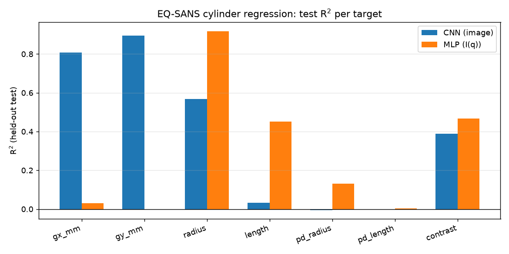
| Target | CNN (image) | MLP (I(q)) | Read |
|---|---|---|---|
gx_mm | 0.807 | 0.031 | CNN-only signal |
gy_mm | 0.896 | −0.003 | CNN-only signal |
radius | 0.569 | 0.918 | MLP wins; CNN still converging (§9) |
length | 0.033 | 0.451 | Weak-signal target; needs the I(q) curve |
pd_radius | −0.005 | 0.132 | Weak but real; data-hungry |
pd_length | −0.002 | 0.003 | Effectively unlearned at this scale |
contrast | 0.390 | 0.468 | Capped by sign non-identifiability (§9) |
| Run | Instances | Epochs | contrast R² (CNN) | contrast R² (MLP) |
|---|---|---|---|---|
| Smoke, before normalization fix | 500 | 25 | 0.06 | 0.01 |
| Smoke, after normalization fix | 500 | 25 | 0.41 | 0.47 |
| Full campaign | 5,000 | 50 | 0.39 | 0.468 |
The fix (§8) is what moved contrast; a further 10× of data did not move it further. That is consistent with §9's diagnosis — the ceiling on contrast is the sign ambiguity itself, not sample size, so it will not respond to more data the way length and radius did.
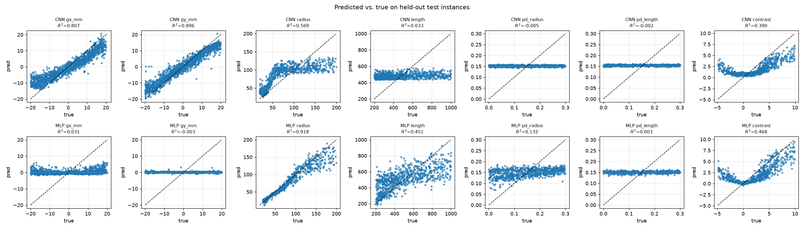
contrast panels (§9) and the CNN radius saturation at high true values (§9).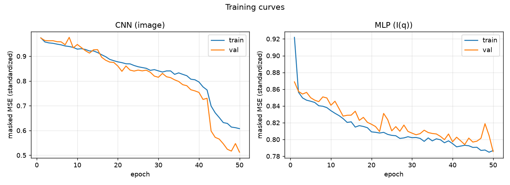
Seven scikit-learn / XGBoost regressors were trained on exactly the same data and the same 70/15/15 split (by instance_id, same seed) as the neural networks, so the R² values are directly comparable: ridge, kNN (k=10), RBF-SVR, random forest, extra trees, histogram gradient boosting and XGBoost. They ran on Juliet (submit_classical.sbatch, CPU only). All use fixed default-style hyperparameters — nothing was tuned on the test set. The test split is 750 instances (1,500 runs; 750 sample-on rows for the sample targets), so differences of about 0.01–0.02 between classical methods are within noise.
Two input sets were compared: iq (the same 60-point log I(q) the MLP sees) and iq+img (I(q) plus 73 summary features of the 2D image: log total counts, intensity centroid and widths in mm, four quadrant flux fractions, and an 8×8 block-summed log image). A target abs_contrast = |contrast| was added, because the sign of contrast is not recoverable (§9).
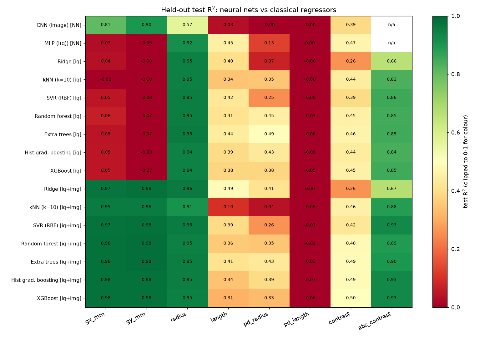
| Target | Best neural net | Best classical | Which classical model |
|---|---|---|---|
gx_mm | 0.807 (CNN) | 0.978 | Hist. gradient boosting [iq+img] |
gy_mm | 0.896 (CNN) | 0.981 | Extra trees [iq+img] |
radius | 0.918 (MLP) | 0.958 | Ridge [iq+img] (every model ≥ 0.91) |
length | 0.451 (MLP) | 0.492 | Ridge [iq+img] |
pd_radius | 0.132 (MLP) | 0.494 | Extra trees [iq] |
pd_length | 0.003 | 0.001 | none — all 14 combinations between −0.09 and 0.001 |
contrast (signed) | 0.468 (MLP) | 0.501 | XGBoost [iq+img] |
|contrast| | not trained | 0.928 | Hist. gradient boosting [iq+img] |
gx_mm (centroid x) and gy_mm (centroid y) (Fig. 11), and plain ridge regression already reaches 0.971 / 0.977. On I(q) alone, every model is at or below 0.06 — radial averaging discards the shift. The CNN (0.81 / 0.90) was learning this the hard way.radius reaches 0.94–0.95 from I(q) alone with any method, even ridge; with image features the forest leans on the pattern's widths (Fig. 11).contrast panel of Fig. 12, true contrasts of −4 to −2 are predicted as positive values, and the fit bottoms out near 0. Switching the target to |contrast| lifts R² from 0.50 to 0.93.pd_radius is partly learnable (0.49 from I(q) with extra trees, against 0.13 for the MLP), driven by the high-q bins (0.09–0.15 Å−1) where polydispersity damps the ripples. Adding image features did not help.pd_length is not learnable here. Fig. 12 shows the best model simply predicting the mean. Fourteen method/feature combinations all fail, which points to an information limit of this data (Monte Carlo noise at ncount=2e6 against a weak effect), not to a modelling gap.length stays around 0.3–0.5, with small, diffuse feature importances (at most 0.04) and predictions that shrink toward the mean at the extremes.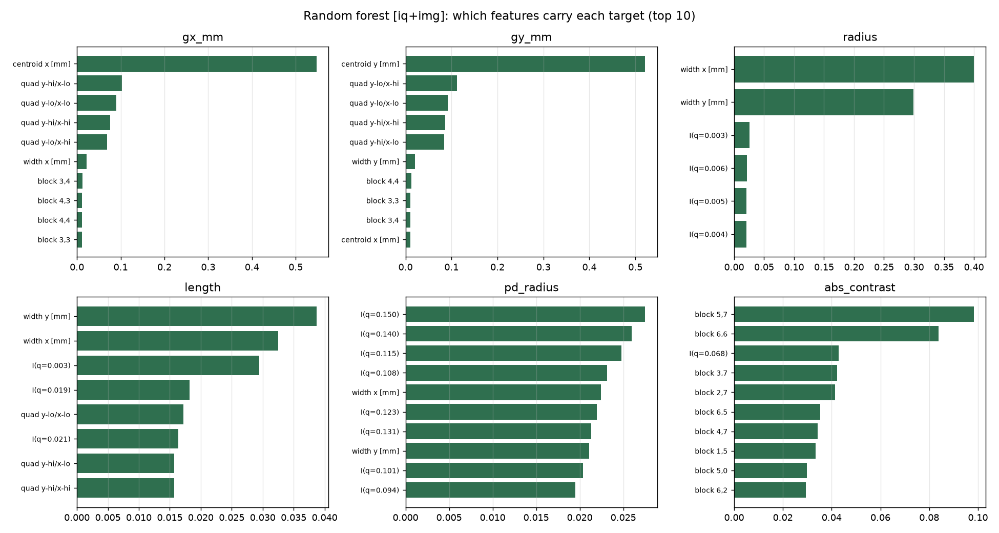
gx_mm/gy_mm; image widths dominate radius; high-q I(q) bins lead pd_radius; block sums near the centre of the image (total intensity level) lead |contrast|.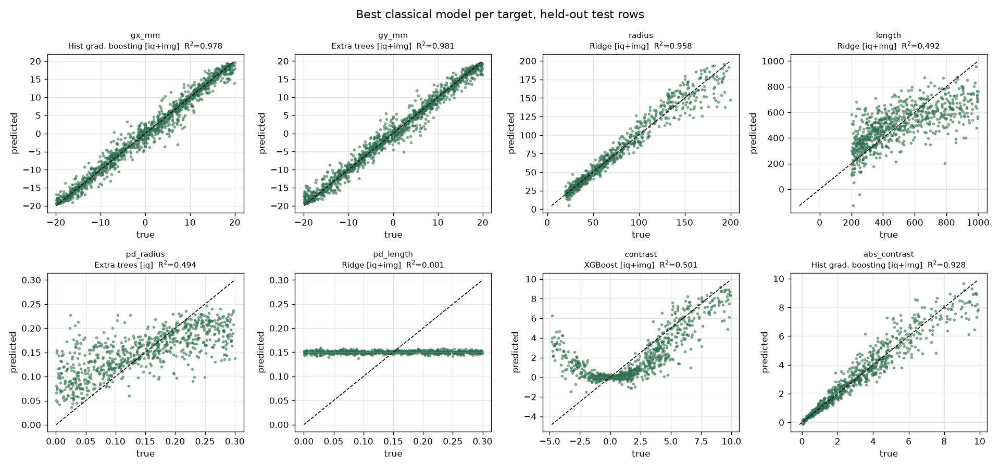
contrast panel, the flat pd_length line, and the shrinkage toward the mean at large length and radius.The original image loader normalized each detector image by its own peak (img / img.max()), copied uncritically from the workshop's classification-notebook lineage — where that's the right call, because classification only needs shape. Regression needs absolute scale too: intensity is proportional to (sld−sldsolvent)², so forcing every image to peak at exactly 1.0 erases the one channel that carries contrast.
Verified mechanistically, not just reasoned about: two real McStas runs differing only in contrast (0.5 vs 9.9) showed a 403× intensity ratio, matching the theoretical 392× prediction. Under the old per-image normalization both images were forced to an identical peak of 1.0 (mean pixel difference 0.25, pure noise); under dataset-level normalization — mean/std fit once from a training-split subsample, applied uniformly — the same pair kept a 4× larger, physically real separation.
load_detector_image_raw/load_iq_raw apply no per-sample scaling; fit_normalization() computes mean/std once from training data and both ImageDataset/IQDataset apply it uniformly. Confirmed by the smoke-test contrast R² jump in the table above.contrast target has a real identifiability bugScattered intensity depends on (sld−sldsolvent)² — squared. +5 and −5 contrast are physically indistinguishable from a single measurement. The V-shaped scatter in Fig. 8 is the model correctly converging toward |contrast| while being scored against a signed target it cannot recover the sign of. Fig. 4 (bottom middle) confirms this with real simulations: contrast +2.5 and −2.5 give identical I(q).
|contrast| (or contrast²) instead of signed contrast, in both make_run_script.py's manifest and train_regressor.py's target list.Fig. 9's CNN validation loss is at its steepest descent in the final 10 of 50 epochs — it had not converged when training stopped. This directly explains why CNN trails MLP on radius/length despite having richer input: it simply hadn't finished learning to use it.
ReduceLROnPlateau) to converge faster within a similar budget. The existing eqsans_regressor_checkpoint_cnn_only.pt intermediate save (added after the "epoch=50 on a 1-hour budget" risk was flagged) protects a longer run against the SLURM job being killed mid-training.sld itself a target?Because both sld and sld_solvent vary independently in this design, and the data only constrains their difference — sld alone (and material identity) is information-theoretically unrecoverable from a single measurement, not just hard to learn. Real contrast-variation SANS experiments solve this by measuring the same sample at several known solvent contrasts and fitting jointly — a different, larger campaign than a single-shot design, not a training fix.
make_run_script.py's manifest and train_regressor.py's targets. This is now demonstrated, not just argued: R² goes from 0.50 to 0.93 (§7).gx/gy 0.98, radius 0.96, |contrast| 0.93). It trains in minutes on CPU and is the number a neural network has to beat.gx/gy do not get about 4× the weight of each sample target, train the CNN much longer with a learning-rate schedule, and give both networks the engineered features (centroid, widths, total counts) alongside the raw input — a fusion model.pd_length as an information limit before spending more effort. Fourteen methods fail identically; the cheap test is a small set of higher-ncount simulations, or dropping it from the target list.sld matters, redesign the campaign around paired measurements at known solvent contrasts per sample, not a single random draw.Everything below lives in Group2/ of the project repository (mccode-dev/PaNRAID-results).